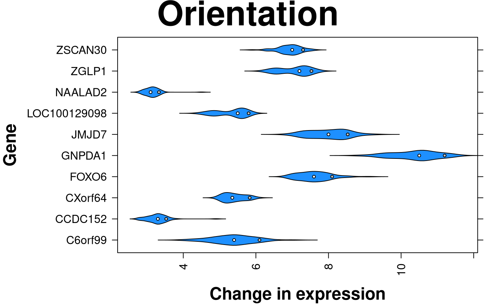
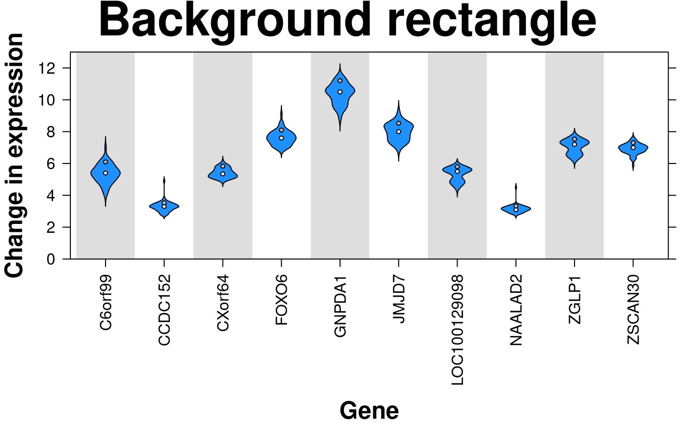

Make a violin plot
create.violinplot.RdThis function takes a dataframe and writes a pretty TIFF violin plot
Usage
create.violinplot(
formula,
data,
filename = NULL,
main = NULL,
main.just = 'center',
main.x = 0.5,
main.y = 0.5,
main.cex = 3,
xlab.label = tail(sub('~', '', formula[-2]), 1),
ylab.label = tail(sub('~', '', formula[-3]), 1),
xlab.cex = 2,
ylab.cex = 2,
xlab.col = 'black',
ylab.col = 'black',
xlab.top.label = NULL,
xlab.top.cex = 2,
xlab.top.col = 'black',
xlab.top.just = 'center',
xlab.top.x = 0.5,
xlab.top.y = 0,
xaxis.lab = TRUE,
yaxis.lab = TRUE,
xaxis.cex = 1.5,
yaxis.cex = 1.5,
xaxis.col = 'black',
yaxis.col = 'black',
xaxis.fontface = 'bold',
yaxis.fontface = 'bold',
xaxis.rot = 0,
yaxis.rot = 0,
xaxis.tck = c(1,0),
yaxis.tck = c(1,1),
xlimits = NULL,
xat = TRUE,
ylimits = NULL,
yat = TRUE,
col = 'black',
lwd = 1,
border.lwd = 1,
bandwidth = 'nrd0',
bandwidth.adjust = 1,
extra.points = NULL,
extra.points.pch = 21,
extra.points.col = 'white',
extra.points.border = 'black',
extra.points.cex = 1,
start = NULL,
end = NULL,
scale = FALSE,
plot.horizontal = FALSE,
top.padding = 0.1,
bottom.padding = 0.7,
left.padding = 0.5,
right.padding = 0.3,
key = NULL,
legend = NULL,
add.rectangle = FALSE,
xleft.rectangle = NULL,
ybottom.rectangle = NULL,
xright.rectangle = NULL,
ytop.rectangle = NULL,
col.rectangle = 'transparent',
alpha.rectangle = 1,
height = 6,
width = 6,
resolution = 1600,
size.units = 'in',
enable.warnings = FALSE,
description = 'Created with BoutrosLab.plotting.general',
style = 'BoutrosLab',
preload.default = 'custom',
use.legacy.settings = FALSE,
disable.factor.sorting = FALSE,
strip.col = 'white',
strip.cex = 1,
strip.fontface = 'bold',
layout = NULL
)Arguments
- formula
The formula used to extract the violin components from the data-frame
- data
The data-frame to plot
- filename
Filename for tiff output, or if NULL returns the trellis object itself
- main
The main title for the plot (space is reclaimed if NULL)
- main.just
The justification of the main title for the plot, default is centered
- main.x
The x location of the main title, deault is 0.5
- main.y
The y location of the main title, default is 0.5
- main.cex
Size of text for main plot title, defaults to 3
- xlab.label
The label for the x-axis
- ylab.label
The label for the y-axis
- xlab.cex
Size of x-axis label, defaults to 3
- ylab.cex
Size of y-axis label, defaults to 3
- xlab.col
Colour of the x-axis label, defaults to “black”
- ylab.col
Colour of the y-axis label, defaults to “black”
- xlab.top.label
The label for the top x-axis
- xlab.top.cex
Size of top x-axis label
- xlab.top.col
Colour of the top x-axis label
- xlab.top.just
Justification of the top x-axis label, defaults to centered
- xlab.top.x
The x location of the top x-axis label
- xlab.top.y
The y location of the top y-axis label
- xaxis.lab
Vector listing x-axis tick labels, defaults to automatic
- yaxis.lab
Vector listing y-axis tick labels, defaults to automatic
- xaxis.cex
Size of x-axis tick labels, defaults to 2
- yaxis.cex
Size of y-axis tick labels, defaults to 2
- xaxis.col
Colour of the x-axis tick labels, defaults to “black”
- yaxis.col
Colour of the y-axis tick labels, defaults to “black”
- xaxis.fontface
Fontface for the x-axis scales
- yaxis.fontface
Fontface for the y-axis scales
- xaxis.rot
Rotation of x-axis tick labels; defaults to 0
- yaxis.rot
Rotation of y-axis tick labels; defaults to 0
- xaxis.tck
Specifies the length of the tick marks for x-axis, defaults to c(1,0)
- yaxis.tck
Specifies the length of the tick marks for y-axis, defaults to c(1,1)
- xlimits
Two-element vector giving the x-axis limits, default is automatic
- xat
Vector listing where the x-axis labels should be drawn, default is automatic
- ylimits
Two-element vector giving the y-axis limits, default is automatic
- yat
Vector listing where the y-axis labels should be drawn, default is automatic
- col
Colour to use for filling the interior of the violin plots, defaults to “black”
- lwd
Line width, defaults to 1
- border.lwd
Width of the exterior boundary of the violin plots, defaults to 1
- bandwidth
Smoothing bandwidth, or character string giving rule to choose bandwidth ('nrd0', 'nrd', 'ucv', 'bcv', 'sj', or 'sj-ste'). Passed to base R function density, via lattice::bwplot.
- bandwidth.adjust
Adjustment parameter for the bandwidth (bandwidth used is bandwidth*bandwidth.adjust). Makes it easy to specify bandwidth as a proportion of the default.
- extra.points
A list of numeric vectors, each one of length equal to the number of violins to be plotted. Specifies a set or sets of extra points to be plotted along the vertical spine of each violin plot. Defaults to NULL (no points to be added)
- extra.points.pch
A vector of the same length as extra.points specifying the symbol to use for each set of points. Defaults to 21
- extra.points.col
A vector of the same length as extra.points specifying the colour to use for each set of points. Defaults to “white”
- extra.points.border
A vector of the same length as extra.points specifying the border colour to use for points >=21. Defaults to “black”
- extra.points.cex
A vector of the same length as extra.points specifying the size of each set of points. Defaults to 1
- start
Start of boundary cutoff, default is NULL for no boundary
- end
End of boundary cutoff, default is NULL for no boundary
- scale
Logical; Scales the violin plots, see ?panel.violin for more details, default is FALSE
- plot.horizontal
Logical; Determines whether to draw violin plot horizontally or vertically; default is FALSE; If
horizontalisFALSE, x will be coerced to a factor or shingle, and vise versa.- top.padding
A number giving the top padding in multiples of the lattice default
- bottom.padding
A number giving the bottom padding in multiples of the lattice default
- left.padding
A number giving the left padding in multiples of the lattice default
- right.padding
A number giving the right padding in multiples of the lattice default
- key
Add a key to the plot. See xyplot.
- legend
Add a legend to the plot. Helpful for adding multiple keys and adding keys to the margins of the plot. See xyplot.
- add.rectangle
Allow a rectangle to be drawn, default is FALSE
- xleft.rectangle
Specifies the left x coordinate of the rectangle to be drawn
- ybottom.rectangle
Specifies the bottom y coordinate of the rectangle to be drawn
- xright.rectangle
Specifies the right x coordinate of the rectangle to be drawn
- ytop.rectangle
Specifies the top y coordinate of the rectangle to be drawn
- col.rectangle
Specifies the colour to fill the rectangle's area
- alpha.rectangle
Specifies the colour bias of the rectangle to be drawn
- height
Figure height, defaults to 6 inches
- width
Figure width, defaults to 6 inches
- resolution
Figure resolution in dpi, defaults to 1600
- size.units
Figure units, defaults to inches
- enable.warnings
Print warnings if set to TRUE, defaults to FALSE
- description
Short description of image/plot; default NULL
- style
defaults to “BoutrosLab”, also accepts “Nature”, which changes parameters according to Nature formatting requirements
- preload.default
ability to set multiple sets of diffrent defaults depending on publication needs
- use.legacy.settings
boolean to set wheter or not to use legacy mode settings (font)
- disable.factor.sorting
Disable barplot auto sorting factors alphabetically/numerically
- strip.col
Strip background colour, defaults to “white”
- strip.cex
Size of text in Strip titles
- strip.fontface
Strip title fontface, defaults to bold. 1 = plain, 2 = bold, 3 = italics, 4 = bold and italics
- layout
A vector specifying the number of columns, rows (e.g., c(2,1)).
Value
If filename is NULL then returns the trellis object, otherwise creates a plot and returns a 0/1 success code.
Warning
If this function is called without capturing the return value, or specifying a filename, it may crash while trying to draw the histogram. In particular, if a script that uses such a call of create histogram is called by reading the script in from the command line, it will fail badly, with an error message about unavailable fonts:
Error in grid.Call.graphics("L_text", as.graphicsAnnot(x$label), x$x, )
Invalid font type
Calls: print ... drawDetails.text -> grid.Call.graphics -> .Call.graphics
Examples
set.seed(12345);
simple.data <- data.frame(
x = c(rep(rnorm(50),5)),
y = as.factor(sample(LETTERS[1:5],250,TRUE))
);
create.violinplot(
# filename = tempfile(pattern = 'Violinplot_Simple', fileext = '.tiff'),
formula = x ~ y,
data = simple.data,
resolution = 100
);
# load real datasets
violin.data <- data.frame(
values = c(t(microarray[1:10, 1:58])),
genes = rep(rownames(microarray)[1:10], each = 58),
sex = patient$sex
);
# Minimal input
create.violinplot(
# filename = tempfile(pattern = 'Violinplot_Minimal_Input', fileext = '.tiff'),
formula = values ~ genes,
data = violin.data,
main = 'Minimal input',
xaxis.rot = 90,
description = 'Violinplot created by BoutrosLab.plotting.general',
resolution = 100
);
# Axes & Labels
create.violinplot(
# filename = tempfile(pattern = 'Violinplot_Axes_Labels', fileext = '.tiff'),
formula = values ~ genes,
data = violin.data,
main = 'Axes & labels',
xaxis.rot = 90,
# Adjusting axes
xaxis.cex = 1,
yaxis.cex = 1,
ylimits = c(0, 13),
yat = seq(0, 12, 2),
xaxis.fontface = 1,
yaxis.fontface = 1,
xlab.label = 'Gene',
ylab.label = 'Change in expression',
xlab.cex = 1.5,
ylab.cex = 1.5,
description = 'Violinplot created by BoutrosLab.plotting.general',
resolution = 100
);
# Range
create.violinplot(
# filename = tempfile(pattern = 'Violinplot_Range', fileext = '.tiff'),
formula = values ~ genes,
data = violin.data,
main = 'Range',
xaxis.rot = 90,
xaxis.cex = 1,
yaxis.cex = 1,
# adjusted y-axis limits
ylimits = c(0, 11),
yat = seq(0, 10, 2),
xaxis.fontface = 1,
yaxis.fontface = 1,
xlab.label = 'Gene',
ylab.label = 'Change in expression',
xlab.cex = 1.5,
ylab.cex = 1.5,
# Specify range
start = 1,
end = 10,
description = 'Violinplot created by BoutrosLab.plotting.general',
resolution = 100
);
# Scaling
create.violinplot(
# filename = tempfile(pattern = 'Violinplot_Scale', fileext = '.tiff'),
formula = values ~ genes,
data = violin.data,
main = 'Scale',
xaxis.rot = 90,
xaxis.cex = 1,
yaxis.cex = 1,
ylimits = c(0, 13),
yat = seq(0, 12, 2),
xaxis.fontface = 1,
yaxis.fontface = 1,
xlab.label = 'Gene',
ylab.label = 'Change in expression',
xlab.cex = 1.5,
ylab.cex = 1.5,
# Scale
scale = TRUE,
description = 'Violinplot created by BoutrosLab.plotting.general',
resolution = 100
);
# \donttest{
# Extra points
median.points <- unlist(tapply(violin.data$values, violin.data$genes, median));
top.points <- unlist(tapply(violin.data$values, violin.data$genes, quantile, 0.90));
create.violinplot(
# filename = tempfile(pattern = 'Violinplot_Points', fileext = '.tiff'),
formula = values ~ genes,
data = violin.data,
main = 'Extra points',
xaxis.rot = 90,
xaxis.cex = 1,
yaxis.cex = 1,
ylimits = c(0, 13),
yat = seq(0, 12, 2),
xaxis.fontface = 1,
yaxis.fontface = 1,
xlab.label = 'Gene',
ylab.label = 'Change in expression',
xlab.cex = 1.5,
ylab.cex = 1.5,
# Adding median and 90th percentile
extra.points = list(median.points, top.points),
extra.points.pch = 21,
extra.points.col = c('white','grey'),
extra.points.cex = 0.5,
description = 'Violinplot created by BoutrosLab.plotting.general',
resolution = 100
);
# Colours
create.violinplot(
# filename = tempfile(pattern = 'Violinplot_Colour', fileext = '.tiff'),
formula = values ~ genes,
data = violin.data,
main = 'Colour',
xaxis.rot = 90,
xaxis.cex = 1,
yaxis.cex = 1,
ylimits = c(0, 13),
yat = seq(0, 12, 2),
xaxis.fontface = 1,
yaxis.fontface = 1,
xlab.label = 'Gene',
ylab.label = 'Change in expression',
xlab.cex = 1.5,
ylab.cex = 1.5,
extra.points = list(median.points, top.points),
extra.points.pch = 21,
extra.points.col = c('white','grey'),
extra.points.cex = 0.5,
# Colour
col = 'dodgerblue',
description = 'Violinplot created by BoutrosLab.plotting.general',
resolution = 100
);
# Custom labels
create.violinplot(
# filename = tempfile(pattern = 'Violinplot_Custom_Labels', fileext = '.tiff'),
formula = values ~ genes,
data = violin.data,
main = 'Custom labels',
xaxis.rot = 90,
xaxis.cex = 1,
yaxis.cex = 1,
ylimits = c(0, 16),
yat = c(0,1,2,4,8,16),
xaxis.fontface = 1,
yaxis.fontface = 1,
xlab.label = 'Gene',
ylab.label = 'Change in expression',
xlab.cex = 1.5,
ylab.cex = 1.5,
extra.points = list(median.points, top.points),
extra.points.pch = 21,
extra.points.col = c('white','grey'),
extra.points.cex = 0.5,
col = 'dodgerblue',
# customizing labels
yaxis.lab = c(
0,
expression(paste('2'^'0')),
expression(paste('2'^'1')),
expression(paste('2'^'2')),
expression(paste('2'^'4')),
expression(paste('2'^'5'))
),
description = 'Violinplot created by BoutrosLab.plotting.general',
resolution = 100
);
# Orientation
create.violinplot(
# filename = tempfile(pattern = 'Violinplot_Orientation', fileext = '.tiff'),
# switch formula
formula = genes ~ values,
data = violin.data,
main = 'Orientation',
xaxis.rot = 90,
xaxis.cex = 1,
yaxis.cex = 1,
xaxis.fontface = 1,
yaxis.fontface = 1,
ylab.label = 'Gene',
xlab.label = 'Change in expression',
xlab.cex = 1.5,
ylab.cex = 1.5,
extra.points = list(median.points, top.points),
extra.points.pch = 21,
extra.points.col = c('white','grey'),
extra.points.cex = 0.5,
col = 'dodgerblue',
# orientation
plot.horizontal = TRUE,
description = 'Violinplot created by BoutrosLab.plotting.general',
resolution = 100
);

# background
create.violinplot(
# filename = tempfile(pattern = 'Violinplot_Background', fileext = '.tiff'),
formula = values ~ genes,
data = violin.data,
main = 'Background rectangle',
xaxis.rot = 90,
xaxis.cex = 1,
yaxis.cex = 1,
ylimits = c(0, 13),
yat = seq(0, 12, 2),
xaxis.fontface = 1,
yaxis.fontface = 1,
xlab.label = 'Gene',
ylab.label = 'Change in expression',
xlab.cex = 1.5,
ylab.cex = 1.5,
extra.points = list(median.points, top.points),
extra.points.pch = 21,
extra.points.col = c('white','grey'),
extra.points.cex = 0.5,
col = 'dodgerblue',
# background
add.rectangle = TRUE,
xleft.rectangle = seq(0.5, 8.5, 2),
ybottom.rectangle = 0,
xright.rectangle = seq(1.5, 9.5, 2),
ytop.rectangle = 13,
col.rectangle = 'grey',
alpha.rectangle = 0.5,
description = 'Violinplot created by BoutrosLab.plotting.general',
resolution = 100
);

# Nature style
create.violinplot(
# filename = tempfile(pattern = 'Violinplot_Nature_style', fileext = '.tiff'),
formula = values ~ genes,
data = violin.data,
main = 'Nature style',
xaxis.rot = 90,
xaxis.cex = 1,
yaxis.cex = 1,
ylimits = c(0, 13),
yat = seq(0, 12, 2),
xaxis.fontface = 1,
yaxis.fontface = 1,
xlab.cex = 1.5,
ylab.cex = 1.5,
col = 'dodgerblue',
add.rectangle = TRUE,
xleft.rectangle = seq(0.5, 8.5, 2),
ybottom.rectangle = 0,
xright.rectangle = seq(1.5, 9.5, 2),
ytop.rectangle = 13,
col.rectangle = 'grey',
alpha.rectangle = 0.5,
# set style to Nature
style = 'Nature',
# demonstrating how to italicize character variables
ylab.lab = expression(paste('italicized ', italic('a'))),
# demonstrating how to create en-dashes
xlab.lab = expression(paste('en dashs: 1','\u2013', '10'^'\u2013', ''^3)),
description = 'Violinplot created by BoutrosLab.plotting.general',
resolution = 200
);
#> Warning: Setting resolution to 1200 dpi.
#> Warning: Nature also requires italicized single-letter variables and en-dashes
#> for ranges and negatives. See example in documentation for how to do this.
#> Warning: Avoid red-green colour schemes, create TIFF files, do not outline the figure or legend.
# }